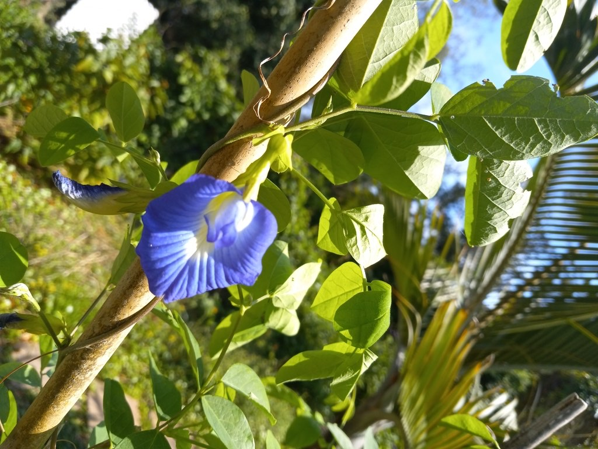

- The flowers produce one of the most vivid natural blue dyes known — used for centuries in Southeast Asian cooking to color rice, desserts, and beverages a striking blue or purple. Butterfly pea tea is vivid blue and turns pink when lemon juice is added — the color change is a pH reaction visible in a glass.
- A documented larval host plant for several butterfly species. The flowers attract bees and butterflies as nectar sources as well.
- A twining vine that climbs readily on fences and trellises. Fixes atmospheric nitrogen through root nodules — improving soil as it grows.
- The seeds contain some toxic compounds and should not be eaten in quantity.
Non-native. Native to tropical Asia and the Indian subcontinent. Naturalized widely throughout the tropics including Florida. Member of Fabaceae — the legume family.
- Butterfly Pea is best known for its flowers, which yield one of the most vivid natural blue dyes known. Steeped in hot water they turn it deep blue, and a squeeze of something acidic - lemon or lime - swings the color to purple or pink, a trick used for centuries in Southeast Asian cooking to color rice, drinks, and desserts, and now popular in color-changing teas.
- It is a slender twining legume from tropical Asia, naturalized across the warm tropics including parts of Florida. The flowers are a deep royal blue with a pale or golden throat (white-flowered forms exist too), and as a legume it fixes nitrogen and enriches the soil. It self-seeds readily, so stray seedlings are easy to pull where they are not wanted.
- The flowers are a butterfly nectar source and the plant serves as a larval host for some legume-feeding butterflies; the edible flowers are widely used as a food colorant, while the seeds, like many legume seeds, should not be eaten in quantity.
A documented butterfly nectar plant and larval host. The flowers attract bees, butterflies, and hummingbirds. Nitrogen-fixing roots improve soil for surrounding plants.
The seeds are eaten by birds.
Bright blue (standard) or white, with a distinctive gold and white center marking. Up to 2 inches across. Produced along the twining stems over a long season.
Flat, elongated legume pods. Seeds dark.
Pinnately compound with three to nine leaflets.
Twining vine, 6 to 10 feet. Climbs readily on any support.
The vivid blue flowers with the gold center marking are unmistakable — few plants in Florida offer this color. The three-leaflet compound leaves on a twining stem are the secondary ID.
The flowers are a well-known natural food colorant and tea — vivid blue that turns pink with acid — and are safe in culinary amounts.
The seeds are the part to avoid: they contain toxic amino acids in larger doses, so don't eat them in quantity.
For dogs, the flowers are generally safe, but seeds may cause stomach upset if eaten in quantity.

- © teschaim (CC-BY-NC), via iNaturalist